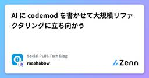

Social PLUS Tech Blogのフィード
https://zenn.dev/p/socialplus
株式会社ソーシャルPLUS 開発チームの技術ブログです。
フィード

AI に codemod を書かせて大規模リファクタリングに立ち向かう 1
1
Social PLUS Tech Blogのフィード
リファクタリングをしていて、ガッと数十ファイルにわたって一括で書き換えたいような場面、みなさんもありますよね？ 場合によっては数百かもしれません。（「そんなに広範囲に影響する時点で設計が悪いのでは？」という指摘はあるかもしれませんが、この記事では横に置いておきます。）この記事は、「AI に codemod を書かせて、それを実行すると書き換えが楽ですよ」というお話です。codemod のことを全く知らなくても、AI に書いてもらえば今日から使っていけるはずです。やることは簡単で、要は以下の手順を回すだけです。「これをこう書き換える codemod を作って」と AI にお願いする...
2日前
Dev Contaienr 上の Claude Code とホストの Mac で起動している Neovim を IDE 連携する
Social PLUS Tech Blogのフィード
masaki です。先日は「Dev Container で起動した Claude Code から Hooks でホストの Mac に通知する」という記事を書きました。https://zenn.dev/socialplus/articles/ea9be95301ae99今日は先日に引き続き、Claude Code と Dev Container の話題です。先日の記事の内容と共通する部分があるため、先日の記事に興味を持っていただいた方は今日の記事にも興味を持っていただけるかもしれません。 この記事で得られるものClaude Code (コンテナ) と Neovim (ホスト...
2日前
Next.js（Pages Router）× TanStack Query Hydrate で SSR のバケツリレー問題解消！
Social PLUS Tech Blogのフィード
こんにちは、ずっきーです！実務の中で「ページの初期表示を速くしたい！」という課題があり、「サイト設定（サイト名、サイトのロゴ画像など）」 の取得を SSR（サーバーサイドレンダリング） で行うようにしました。このアプリは少し特殊で複数のサイトを出し分けるので、 API でサイト設定を取得してます ☝️しかし、取得したサイト設定を Layout や Footer などの非ページコンポーネントでも使いたい場面が多く、props による受け渡しが多くなってしまいました。いわゆるバケツリレー問題に悩まされました、、Next.js の App Router であれば、 Server Co...
4日前

Dev Container で起動した Claude Code から Hooks でホストの Mac に通知する
Social PLUS Tech Blogのフィード
masaki です。弊社では生成 AI を業務に積極的に取り入れています。これまでにも以下のような記事を公開してきました。https://zenn.dev/socialplus/articles/d92f1296c8403ahttps://zenn.dev/socialplus/articles/618bc1016bc51c最近はコードアシストにとどまらず、エージェント型 AI ツールを活用する動きが活発になっています。今回は、よく話題にもなり弊社でも利用している Claude Code について、少し便利になる通知設定のテクニックをご紹介します。 はじめにClaude...
9日前
AWS PrivateLink クロスリージョン接続を活用して AWS と Datadog の通信を閉域網に閉じる
Social PLUS Tech Blogのフィード
概要弊社では USリージョンの Datadog サービスと、ap-northeast-1リージョンの AWS 環境上に起動している Datadog Agent の通信を NAT Gateway 経由のインターネット通信で行っていたのですが、セキュリティ上の理由からインターネットではなく AWS PrivateLink に閉じた接続に切り替えたいと考えていました。ただ、AWS PrivateLink がクロスリージョン接続に対応する前は、Datadog と AWS のリージョンを揃えるか、AWS VPC のリージョン間 VPC ピアリングを使って通信を確立する必要がありました。ど...
16日前
関西 Ruby 会議 08 参加レポート
Social PLUS Tech Blogのフィード
こんにちは、simomu です。2025年6月28日 に京都で開催された関西 Ruby 会議 08 に参加してきました。https://regional.rubykaigi.org/kansai08/いわゆる地域 Ruby 会議というもので、東京 Ruby 会議や松江 Ruby 会議など様々な地域で開催されています。https://regional.rubykaigi.org/関西での地域 Ruby 会議は 2024 年に大阪 Ruby 会議 04 ありましたが、関西 Ruby 会議としては 2017 年以来の開催とのことです。 印象に残ったセッション Witchcra...
24日前
フローチャートを React らしく手軽に実装できる React Flow の紹介
Social PLUS Tech Blogのフィード
こんにちは、steshima です。業務で React Flow に触る機会があったので、今回 React Flow の基本的な使い方を記事にしました。React Flow のバージョンは 12.6.4 です。 React Flow についてReact Flow は、React アプリ上でノードベースの UI を構築できるライブラリです。ドラッグ＆ドロップ・ズーム・ノード間接続など、インタラクティブなフローチャートが比較的簡単に作れます。https://reactflow.dev/ 基本的な使い方React Flow の基本的な使い方を紹介します。 Controll...
25日前
VRTのブレに立ち向かう
Social PLUS Tech Blogのフィード
こんにちは Social PLUS のフロントエンドエンジニアのまっくすです。弊社の開発環境の課題であった「VRTのブレ」に立ち向かった話を共有したいと思います。Storybook v6＋Storycap 環境で頻発していた VRT のブレに対してMSW でダミー画像をモック化storycap から storycap-testrun への移行で対策しました。撮影時間はやや伸びましたが、レビュー負荷が大幅に下がり、開発者体験が確実に向上したので、その手順とポイントを共有します。私たちと同様に、VRTのブレの悩みを少しでも解消することができれば幸いです！ 用語の整理...
1ヶ月前
Rails の本番作業を便利にする maintenance_tasks gem の紹介
Social PLUS Tech Blogのフィード
はじめに初めまして、バックエンドエンジニアの otsubo です 🙇♂️この記事では Rails の本番作業を便利にしてくれる maintenance_tasks gem を紹介します！実際に Rails アプリケーションに導入して本番作業が快適になったため、利用して分かったことや注意点をまとめました。https://github.com/Shopify/maintenance_tasksmaintenance_tasks は本番作業の実行環境を整えてくれる gem です。特に、下記のように DB や CSV のレコード単位で処理を行う単発の作業に向いています。DB ...
1ヶ月前
libvips が作る JPEG の quality は粗い
Social PLUS Tech Blogのフィード
こんにちは、st-1985 です。弊社のサービスの一つである Message Manager では、管理画面でアップロードされた画像を保存し、LINE 用のフォーマットに変換した上で配信していますが、その配信された画像に関してユーザーから「文字がつぶれて読みにくくなった」との声を頂きました。調査の結果、 ActiveStorage で指定している画像加工プロセッサ(libvips) の JPEG におけるデフォルトの品質(quality)が低めに設定されていることがわかりました。この記事ではその詳細と改善策について紹介します。 libvips についてlibvips は、大量...
2ヶ月前
ActiveStorage でグローバルな画像を扱う
Social PLUS Tech Blogのフィード
はじめに弊社では Ruby on Rails を使用しており、ActiveStorage を用いて画像やファイルを扱っています。BtoBtoC のサービスを運営しているので、エンドユーザには CDN を通して配信し、顧客企業向けには S3 の署名付き URL を発行してアクセスを制限した配信を行っています。S3 には CDN 用と署名付き URL 用の 2 種類のバケットを用意しています。先日ある機能を開発しているときに、全顧客で同一の画像（グローバルな画像）をエンドユーザ向けに配信したいという要件が出てきました。具体的な要件は次の通りです。エンドユーザ向けの画像なので、C...
2ヶ月前
Cursorにリーダブルコード準拠のルールを設定しようとして上手くいかなかった話
Social PLUS Tech Blogのフィード
はじめにこんにちは、koyablueです。この前久々にリーダブルコードを読み直しました。リーダブルコードの内容をルール化してAIに任せるといい感じに適用できるのでは？と思ったのでやってみます。具体的なコーディング規約準拠かどうか、というルールを適用させている例はわりとある気がしますが、可読性を担保するための汎用的なルールを正しく適用することは可能なのでしょうか（結果はタイトル通りなわけですが）。 やることリーダブルコードからルールにできそうなものを地道に抽出し、マークダウンにするルールのマークダウンをCursorのProject Rulesに設定するCursorに...
2ヶ月前
コンポーネントカタログ、使ってますか？ Storybook のかわりに Ladle を使ってみた
Social PLUS Tech Blogのフィード
はじめにこんにちは、@zomysan です。Storybookの代替として評判のLadleを触ってみたので簡単な記事にまとめます。Ladle の UI はざっくりこんな感じ。右側に並んでいるのはコンポーネントの一覧です。見た目はスッキリしており、動作も軽いです。 この記事について 対象読者フロントエンドエンジニアStorybook を使っているが、Ladle が気になっている人コンポーネントカタログを使ってみたい人 書いてあることプロジェクトへの Ladle の導入手順React を使ったフロントエンドアプリケーションで Ladle を使ってみた感想...
3ヶ月前
RubyKaigi 2025 参加レポート
Social PLUS Tech Blogのフィード
はじめにこんにちは、 okumud です。先日 RubyKaigi 2025 へ参加してきました。弊社は Gold Sponsor として本年初協賛し、私を含めて simomu, terandard, otsubo の 4人で参加しました。https://prtimes.jp/main/html/rd/p/000000138.000085682.htmlこの記事ではそれぞれ印象に残ったセッションについて紹介します。 印象に残ったセッション Make Parsers Compatible Using Automata Learningwriter: s...
3ヶ月前
乾太くんで家庭内感染が防げるか ChatGPT にシミュレーションしてもらう
Social PLUS Tech Blogのフィード
3 歳になった子どもが体調不良で嘔吐しました。パジャマも布団カバーもべちゃべちゃです。おそらく風邪だとは思いますが、ノロウイルスなんかに家庭内感染するのも嫌なので、念のためハイターでつけ置き洗いをします。子どもの体をシャワーで洗って、新しいパジャマを着せて、寝かしつけをしている間にふと思いました。つけ置き洗いが不十分だったとしても、乾太くんで乾かせばある程度除菌できたりするんだろうか…？ 🤔子どもが腕に乗っていて動けないので、スマホ片手に ChatGPT に聞いてみます。最近また賢くなった気がしますが、どこまで答えてくれるんでしょうか。!この記事のシミュレーション結果を信用しない...
3ヶ月前
十人十色 弊社メンバーの生成AIの使い方 - Cursor, Roo Code, ChatGPT, Copilot...
Social PLUS Tech Blogのフィード
どうもこんにちは、たくびーです。弊社では生成AIを業務に取り入れる流れが活発です。また、Roo CodeやChatGPT、Cursor等の生成AI使用に関して補助制度があるので気軽に使うことができます。その中で今回はフロントエンドチームではどのように生成AIが使われているのか意見を募集してみました。メンバーそれぞれが独自の使い方を試行錯誤しながら、日々の業務効率化に活用しています。ここでは、実際の利用例や悩み、工夫した点についてご紹介します。 Cursorを使っているメンバーの使い方まずはフロントエンドチームでCursorを導入している私を含めたメンバーの使い方についてご...
3ヶ月前
無限に広がるマルチプレイのマインスイーパーを作りたかった話（盤面の拡張、データ層の分離）
Social PLUS Tech Blogのフィード
はじめにこんにちは、hamaguchi です今回は Web アプリとして遊べるマインスイーパーについての2回目の記事です盤面の拡張と改善、データ層の分離を行いましたhttps://zenn.dev/socialplus/articles/ea0502a3b30ecf 前回のまとめ無限の広さの盤面でマルチプレイできるマインスイーパーにするためにはどのようなデータ構造にしたら良いか考えた盤面をブロックという単位で区切り、ブロックにセルがあるという構造を考えたとりあえずブロックの分割なし、100x100 セルの盤面でマルチプレイできるマインスイーパーを作ったフラ...
4ヶ月前
Church Encoding: numberやbooleanを関数だけで表現しよう！
Social PLUS Tech Blogのフィード
Church Encoding は、λ計算（Lambda Calculus）由来のテクニックで、Number、Boolean、データ構造を関数だけで表現できる驚きの手法です！つまり、プリミティブな型を一切使わずに計算ができるんです。この考え方は関数型プログラミングの基礎となっており、「計算とは何か？」を純粋に示してくれます。今回は、NumberとBooleanを関数のみで表す方法を一緒に見てみましょう！ Church Numerals: 数を関数でカウントするもし、Numberがただの値ではなく、「何回何かをするか」を決める関数だったら…？それがChurch Numeralsの考...
4ヶ月前
既存の機能を踏襲し新規の機能を開発した際のリファクタリングの進め方のコツ
Social PLUS Tech Blogのフィード
はじめに既存の機能を参考に新規の機能を開発するケースは割とよくあると思いますが（キーワード検索があり、それを参考にタグやカテゴリーでの検索機能を追加するようなケースなど）このような場合で既存の機能の実装にリファクタリングの余地がある際、その対応に悩んだことはありませんか？ 🤔実際、私はこのようなケースの場合どのようなステップを踏んで取り組めば効率的、効果的に対応できるのかあまり分かっておらず、既存の機能の実装と新規の機能の実装を同時にリファクタリングしようとしてレビュワーの方から下記のようなコメントをいただいたことがありました 👇もともとの既存の機能の実装が、そもそもリファ...
4ヶ月前
Rails 8.0（ActiveSupport）で気になった変更点
Social PLUS Tech Blogのフィード
masaki です。この記事では、Rails 8.0（Active Support）の変更点について、CHANGELOG をざっと読んで気になったところをまとめてみました。メインとなる新機能や大きな変更点についてはすでに色々なブログなどで紹介されていますが、細かいメソッドまわりの小さな変更ってあまり話題にならないですよね。そこで、自分自身の勉強も兼ねて、そういった細かなところを中心にまとめてみました。少しでも参考になれば嬉しいです！本記事の執筆にあたり以下の Rails 8.0.2 の ActiveSupport の CHANGELOG を参照しています。また、記事中の動作...
4ヶ月前